COGA · curso 2
Programar en 3.3 · COGA
1 Crear una ventana
#include <glad/glad.h>
#include <GLFW/glfw3.h>
#include <iostream>
// Dimensiones de la ventana
const int SCR_WIDTH = 800;
const int SCR_HEIGHT = 600;
// Función para manejar entradas del teclado
void processInput(GLFWwindow* window) {
if (glfwGetKey(window, GLFW_KEY_ESCAPE) == GLFW_PRESS)
glfwSetWindowShouldClose(window, true);
}
int main() {
// Inicializa GLFW
if (!glfwInit()) {
std::cerr << "Error al inicializar GLFW" << std::endl;
return -1;
}
// Especificamos la versión de OpenGL (3.3 Core Profile)
//lo de major es el 3 y lo de minor el .3
glfwWindowHint(GLFW_CONTEXT_VERSION_MAJOR, 3);
glfwWindowHint(GLFW_CONTEXT_VERSION_MINOR, 3);
//esto hace que elimine caracteristicas obsoletas
glfwWindowHint(GLFW_OPENGL_PROFILE, GLFW_OPENGL_CORE_PROFILE);
// Creamos la ventana, poniendo tamaño, y titulo.
GLFWwindow* window = glfwCreateWindow(SCR_WIDTH, SCR_HEIGHT, "Ventana con GLFW", NULL, NULL);
if (!window) {
std::cerr << "Error al crear la ventana" << std::endl;
glfwTerminate();
return -1;
}
// Asignamos el contexto de OpenGL a la ventana, hace que todas las llamadas de OpenGL afecten a esa ventana
glfwMakeContextCurrent(window);
// Cargamos las funciones de OpenGL con GLAD
if (!gladLoadGLLoader((GLADloadproc)glfwGetProcAddress)) {
std::cerr << "Error al inicializar GLAD" << std::endl;
return -1;
}
// Configuramos el viewport, área de ña vemta donde OpenGLdibujará
// El (0,0) son las coordenadas de la esquina inferior izquierda
glViewport(0, 0, SCR_WIDTH, SCR_HEIGHT);
// Bucle de renderizado, comprobamos si se debería cerrar la ventana
while (!glfwWindowShouldClose(window)) {
// Procesamos entradas por teclado
processInput(window);
// Limpiamos la pantalla con un color de fondo
glClearColor(0.2f, 0.3f, 0.3f, 1.0f);
glClear(GL_COLOR_BUFFER_BIT);
// Intercambiamos buffers y procesamos eventos pendientes como el teclado o del raton
glfwSwapBuffers(window);
glfwPollEvents();
}
// Terminamos GLFW
glfwTerminate();
return 0;
}
2 Modelado
2.1 Tipos de Shaders
Vertex Shader (VS):
- Posición del vértice del triángulo + otros datos (coordenadas de textura, normal, color, etc).
- Vértice con su posición transformada + (opcionalmente) otros atributos (normal, color, etc.) que se envían al siguiente paso en la pipeline
Fragment Shader (FS):
- Información del fragmento a procesar, que puede incluir datos interpolados desde los vértices (coordenadas de textura, normal, color, etc)
- Calcula el color final del píxel si este se debe representar en pantalla.
Procesos posteriores:
- Z-BUFFER: controla la profundidad de los pixeles para manejar la superposición de objetos en la escena.
- Alpha Test: determina si un objeto debe renderizarse en función de su transparencia
- Blending Test.
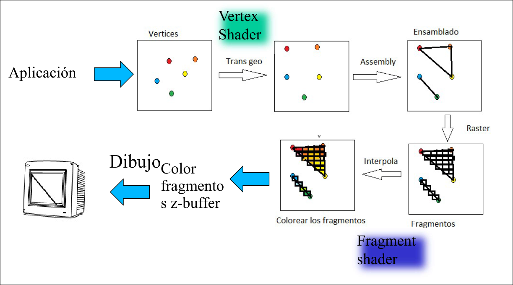
2.2 Envío de Vértices
Para generar figuras en OpenGl 3.3 se usan Vertex Array Objet, que almacenan toda la información del objeto a dibujar. Los VAOs están formados por Vertex Buffer Objects (VBOs), que almacenan información relativa a los vértices, colores, normales, etc.
void medianteArray() {
float vertices[] = { 0.0f, 0.0f, 0.0f, // x
.5f, 0.0f, 0.0f, // x
0.0f, .5f, 0.0f // x, y, z
};
// Se crea el vector de floats que recoge los vértices
GLuint VAO;
glGenVertexArrays(1, &VAO);
glBindVertexArray(VAO);
// Se genera el VAO
// Se activa el VAO, de manera que las funciones invocadas
// posteriormente afectarán a dicho VAO
GLuint VBO;
glGenBuffers(1, &VBO);
glBindBuffer(GL_ARRAY_BUFFER, VBO);
// Se genera el buffer donde se almacenarán los vértices
// Se activa el buffer, de manera que las funciones
// invocadas posteriormente afectarán a dicho buffer
glBufferData(GL_ARRAY_BUFFER, sizeof(vertices), vertices, GL_STATIC_DRAW);
// Se asigna el vector de vértices al buffer y al VAO que están “escuchando”
// y se detalla el modo de dibujo
glVertexAttribPointer(0, 3, GL_FLOAT, GL_FALSE, 3 * sizeof(float), (void*)0);
glEnableVertexAttribArray(0);
// Se especifica el número que identifica al atributo “vértices”, cuántos elementos
// del vector compone un vértice, la distancia de salto al próximo y dónde empieza el
// primer vértice, entre otras cosas
// Se activa el buffer con el atributo “vértices” para su uso
glBindBuffer(GL_ARRAY_BUFFER, 0);
glBindVertexArray(0);
// Se desactiva el buffer (ya no “escucha” modificaciones)
// Se desactiva el VAO (ya no “escucha” modificaciones)
}
glUseProgram(shaderProgram);
//Se indica cuál es el Program Shader a emplear
glBindVertexArray(VAO);
//El VAO especificado “se pone a la escucha” (se activa)
glDrawArrays(GL_LINES, 0, 6);
//Se dibujan las aristas del objeto especificando desde dónde empezar y el número de vértices a dibujar del VAO
glBindVertexArray(0);
//Se desactiva el VAO para su uso (ya no “escucha”)
Si se trabaja con más de un atributo (por ejemplo, se añaden colores):
void medianteArray() {
// Se crea el vector de floats que recoge los vértices y los colores
float vertices[] = {
// Vértices // Colores
0.f, 0.f, 0.f, 1.f, 1.f, 0.f, // Vértice 0: posición, color amarillo
.5f, 0.f, 0.f, 0.f, 0.f, 1.f, // Vértice 1: azul
.5f, .5f, 0.f, 0.f, 1.f, 0.f, // Vértice 2: verde
0.f, .5f, 0.f, 1.f, 0.f, 0.f, // Vértice 3: rojo
-.5f, .5f, 0.f, 1.f, 1.f, 1.f, // Vértice 4: blanco
-.5f, 0.f, 0.f, 0.f, 0.f, 0.f, // Vértice 5: negro
-.5f, -.5f, 0.f, 0.f, 1.f, 1.f, // Vértice 6: cian
0.f, -.5f, 0.f, .5f, 1.f, 0.f // Vértice 7: mitad de 1,1,1
};
GLuint VAO;
glGenVertexArrays(1, &VAO);
glBindVertexArray(VAO);
GLuint VBO;
glGenBuffers(1, &VBO);
glBindBuffer(GL_ARRAY_BUFFER, VBO);
glBufferData(GL_ARRAY_BUFFER, sizeof(vertices), vertices, GL_STATIC_DRAW);
// Se genera el primer atributo ("vértices"), identificado con 0, indicando cuántos elementos
// del vector compone un vértice, el salto al siguiente vértice y dónde empieza el primer vértice.
// Posteriormente, se activa este atributo para su uso.
glVertexAttribPointer(0, 3, GL_FLOAT, GL_FALSE, 6 * sizeof(float), (void*)0);
glEnableVertexAttribArray(0);
// Se genera el primer atributo ("colores"), identificado con 1, indicando cuántos elementos
// del vector compone un color, el salto al siguiente color y dónde empieza el primer color.
// Posteriormente, se activa este atributo para su uso.
glVertexAttribPointer(1, 3, GL_FLOAT, GL_FALSE, 6 * sizeof(float), (void*)(3 * sizeof(float)));
glEnableVertexAttribArray(1);
glBindBuffer(GL_ARRAY_BUFFER, 0);
glBindVertexArray(0);
glDeleteBuffers(1, &VBO);
glUseProgram(shaderProgram);
glBindVertexArray(VAO);
glDrawArrays(GL_LINES, 0, 8);
}
Para evitar escribir varias veces el mismo vértice, se pueden emplear vértices indexados, para lo cual se requiere un vector de índices:
void medianteArray() {
float vertices[] = {
0.0f, 0.0f, 0.0f, // 0
.5f, 0.0f, 0.0f, // x
0.5f, .5f, 0.0f, // y
0.0f, 0.5f, .5f // z
};
unsigned int indices[] = { 0, 1, 0, 2, 0, 3 };
// Se genera el vector de índices, que recoge el orden en el que se recorren los vértices
GLuint VAO;
glGenVertexArrays(1, &VAO);
glBindVertexArray(VAO);
GLuint VBO, EBO;
glGenBuffers(1, &VBO);
glGenBuffers(1, &EBO);
// Se generan los buffers donde se almacenarán los vértices e índices, respectivamente
// Se activa el buffer de vértices y se especifica el vector al que referencia
glBindBuffer(GL_ARRAY_BUFFER, VBO);
glBufferData(GL_ARRAY_BUFFER, sizeof(vertices), vertices, GL_STATIC_DRAW);
// Se activa el buffer de índices y se especifica el vector al que referencia
// (ELEMENT_ARRAY_BUFFER indica que se trata de un array de índices)
glBindBuffer(GL_ELEMENT_ARRAY_BUFFER, EBO);
glBufferData(GL_ELEMENT_ARRAY_BUFFER, sizeof(indices), indices, GL_STATIC_DRAW);
glVertexAttribPointer(0, 3, GL_FLOAT, GL_FALSE, 3 * sizeof(float), (void*)0);
glEnableVertexAttribArray(0);
glBindVertexArray(0);
}
glUseProgram(shaderProgram);
glBindVertexArray(VAO);
glDrawElements(GL_LINES, 6, GL_UNSIGNED_INT, 0);
glBindVertexArray(0);
// La función de dibujo es diferente con indexación
2.3 Gestión de Vértices
Los vértices especificados en un VAO se almacenan en la pipeline y posteriormente son gestionados en el VS y FS, que se almacenan como archivos de texto en el directorio de uso. El código de un VS podría ser el siguiente:
#version 330 core
layout (location = 0) in vec3 aPos;
void main(){
gl_Position = vec4(aPos.x, aPos.y, aPos.z, 1.0);
}
layout (location=0) in vec3 aPospermite almacenar los elementos del atributo identificado como 0 en VA activo en un vector llamadoaPosde 3 componentes.glPositiones una variable predefinida que podremos modificar para alterar la posición de los vértices. En este caso conservamos la de entrada.
El código de un FS podría ser el siguiente:
#version 330 core
void main(){
gl_FragColor = vec4(1, .5, .2, 1.);
}
En caso de que el VAO tenga 2 atributos (vértices y colores) el código de ambos shaders podría ser:
// Vertex Shader
#version 330 core
layout (location = 0) in vec3 aPos;
layout (location = 1) in vec3 aColor;
out vec3 ourColor;
void main() {
gl_Position = vec4(aPos, 1.0);
ourColor = aColor;
}
Para utilizar los shaders en el programa:
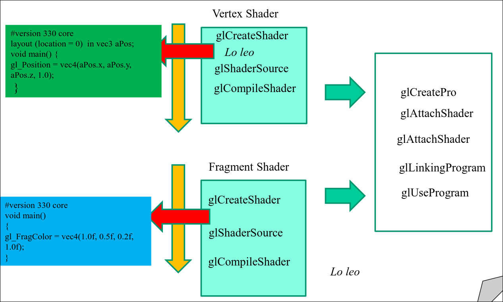
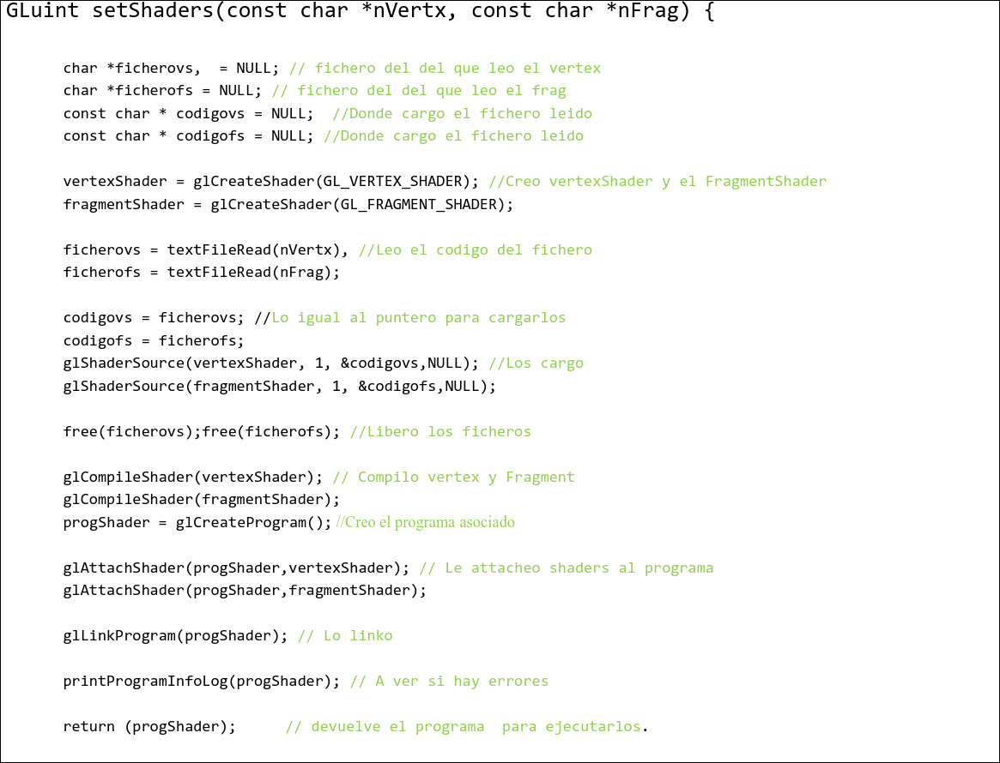
3 Transformaciones
En opengl las transformaciones geométricas se aplican en el VS, multiplicando la matriz de transformación por el vértice y devolviendo la nueva posición. La matriz de transformación se calcula en el main usando la biblioteca GLM (OpenGl Mathematics).
glm::mat4 transform: declaración de la matriz de transformaciónglm::mat4 (): devuelve la identidad 4x4glm::translate(transform,glm::vec3(T_x,T_y,T_z): traslaciónglm::rotate(transform,0, glm::Vec3(x,y,z): rotaciónglm::scale(transofrm, glm::vec4(S_x,S_y,S_z): escalado
La matriz se envía al VS usando una variable de tipo uniform
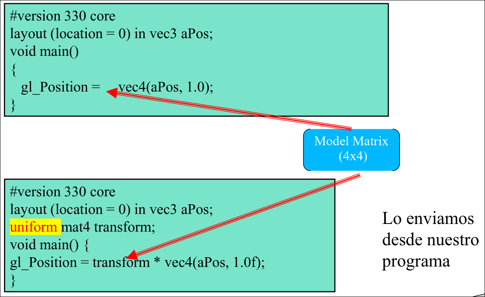
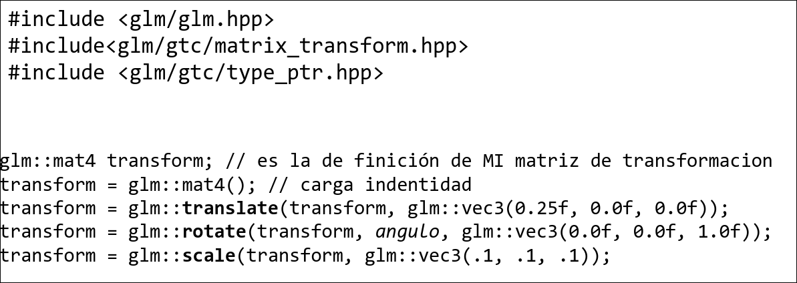
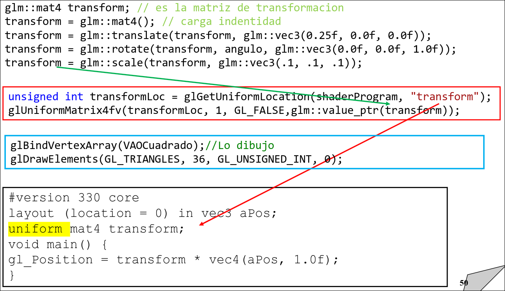
Para evitar andar usando el glm::nombrefunc, vamos a tirar de C++ y le chantamos en la primera línea del programa:
using namespace glm;
4 Visión
En opengl el trabajo sobre la cámara se divide en las matrices de proyección y de vista. Para que el VS calcule la posición de los vértices, se multiplican la matriz de proyección, de la vista y la del modelo por los vértices en coordenadas locales. El orden de la multiplicación es relevante porque el producto no es conmutativo.
-
glm::mat4 view = glm::lookAt(glm::vec3(x,y,z), glm::vec3(x,y,z), glm::vec3(x,y,z));: para definir la matriz de vista -
glm::mat4 proj = glm::ortho(left, right, top, down, near, far);: para realizas una proyección ortográfica -
R = right
-
L = left
-
T = top
-
B = bottom
-
N = near
-
F = far
-
glm::perspective(fov, aspect, near, far);: para realizar una proyección ortográfica.
Las matices se envían al VS usando una variable de tipo uniform.
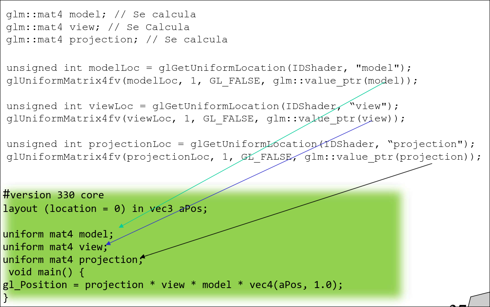
Para que al reescalar la ventana se mantengan las proporciones de la imagen hay que actualizar el aspecto de la perspectiva al nuevo tamaño de la ventana:
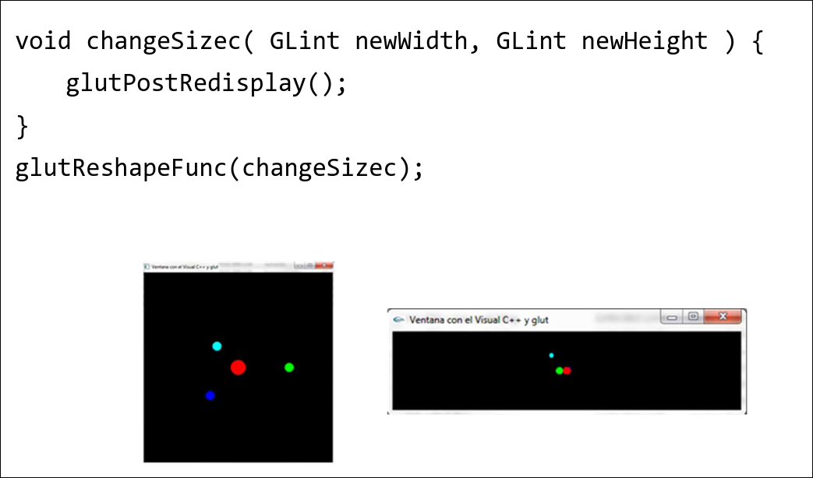
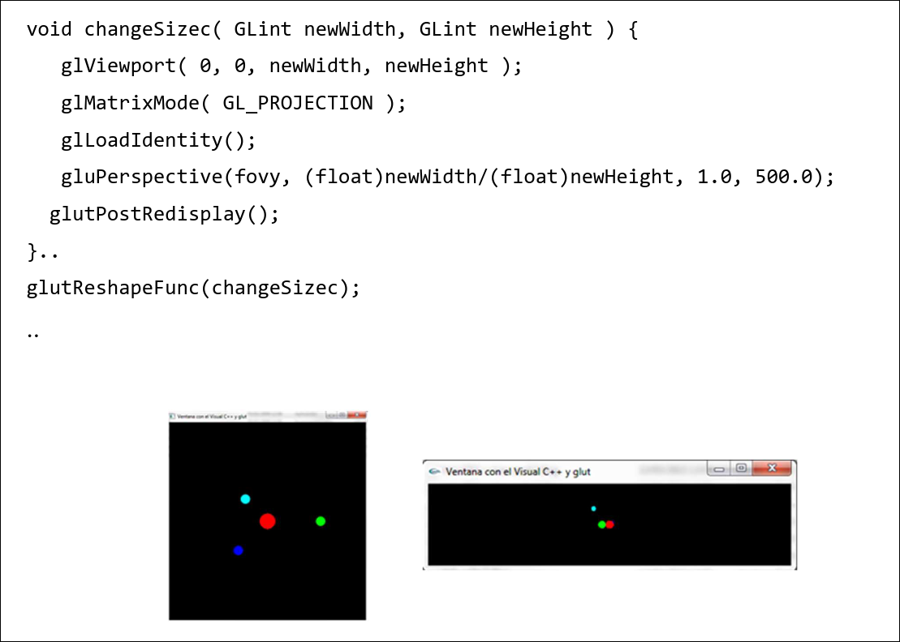
5 Luces
5.1 Modelo de Iluminación Básico
El color de un objeto es fruto de su color original multiplicado por el color de la luz con la que se ilumina.
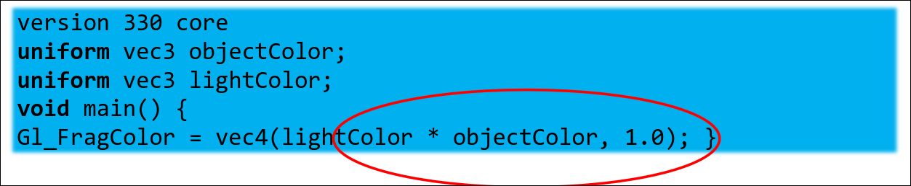
5.2 Luz Ambiente
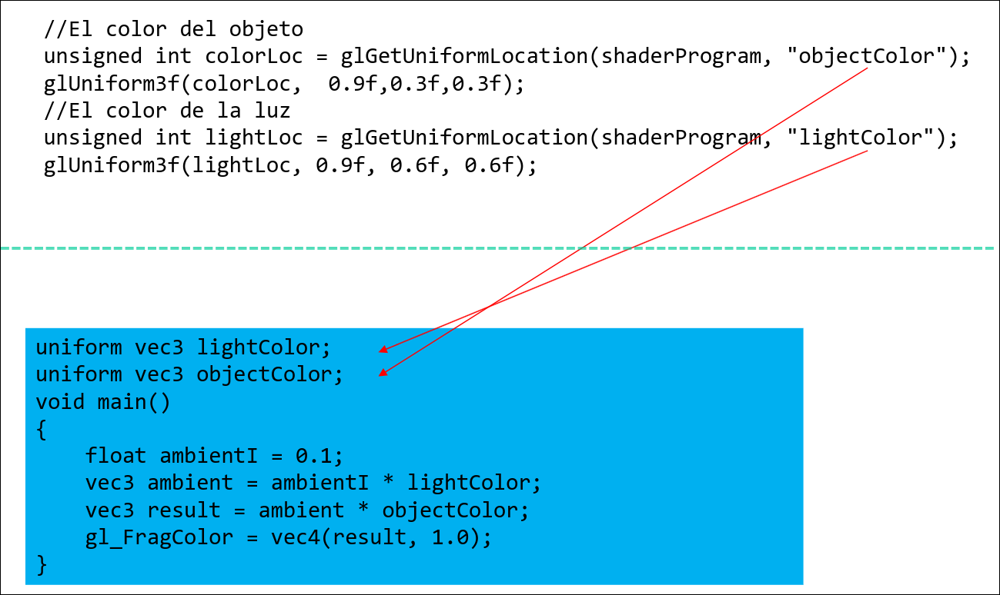
5.3 Luz Difusa
Necesitamos pasarle el shader:
- La atenuación
- Las coordenadas de las normales de las caras
- La posición de la luz
- El punto de cálculo para ver la dirección de la luz
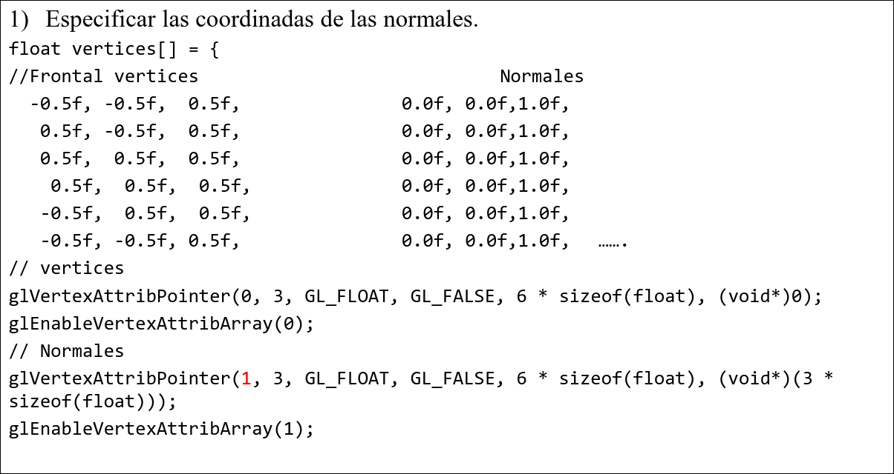
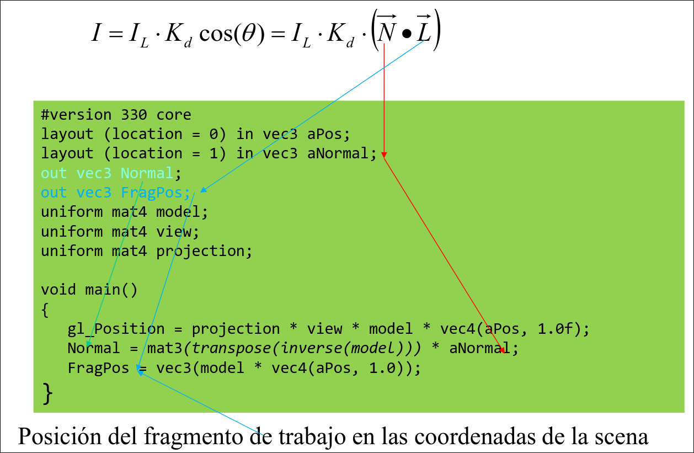
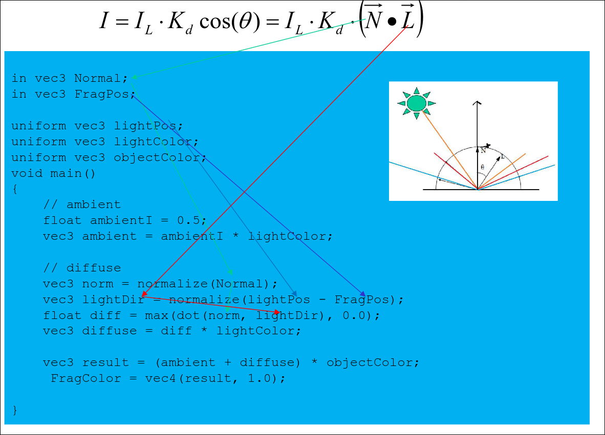
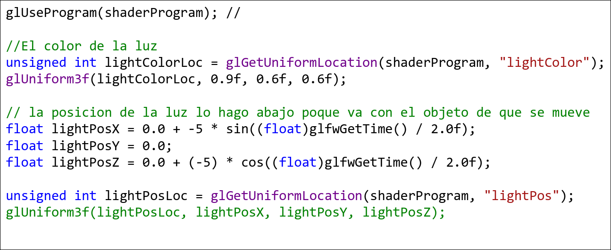
5.4 Luz Especular
Hay que pasarle al FS, además de lo ya dicho, la posición de la cámara.
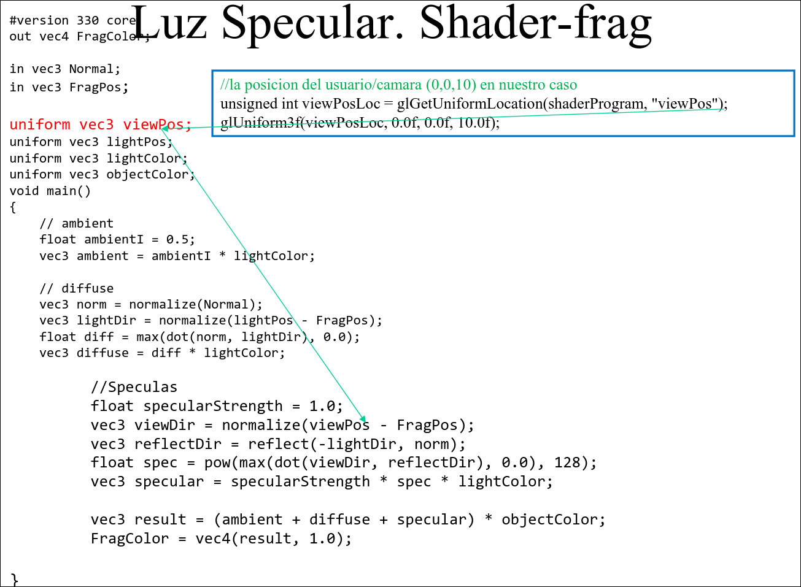